Timeline Magazine
December 1989-January 1990, pages 2-15
"Squaring the Circle: Octagonal Architecture"
By W. Ray Luce
The following scanned pages are from the official magazine of the Ohio Historical Society, Timeline. The January 1989-December 1990 issue included a cover story about octagonal architecture in Ohio and elsewhere. Since this article is somewhat obscure, but is extremely relevant to my article about Circleville's Crites Octagon House, I've decided to post the entire scanned thing here for everyone to read. It offers a great overview of the phenomenon of octagon housing, which is far more common than I originally thought. Enjoy.

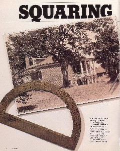
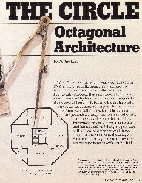
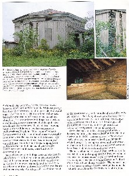
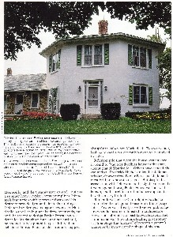
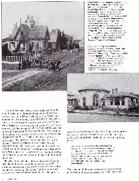
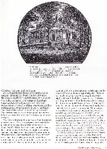
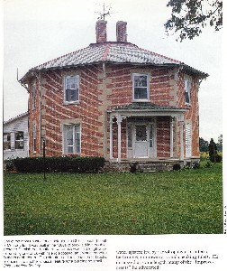
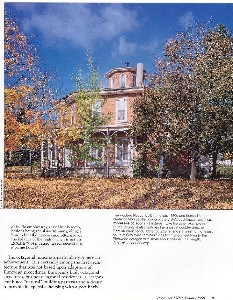
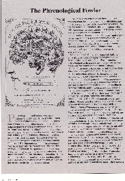
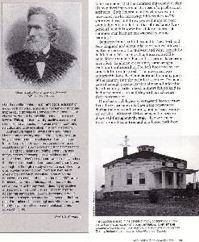
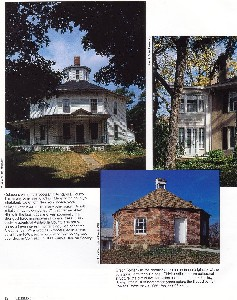
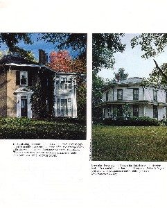
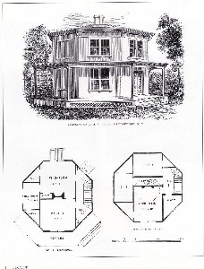
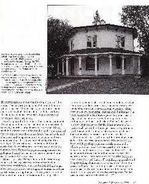
Back